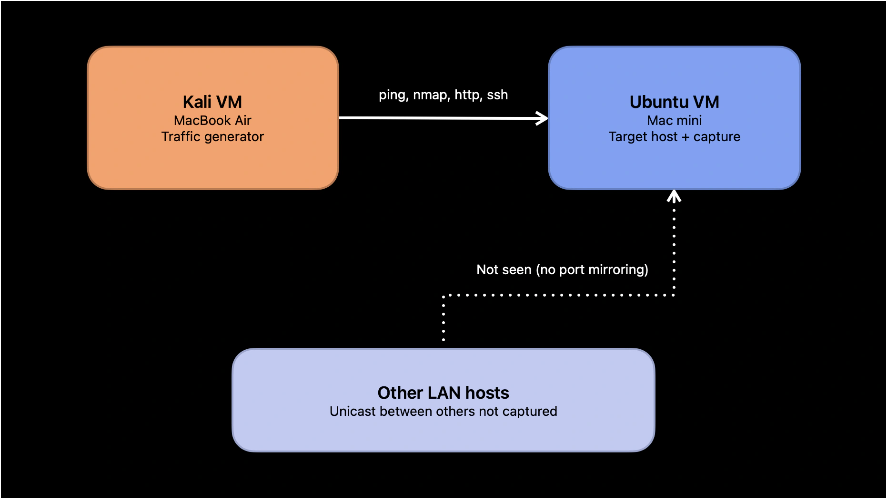
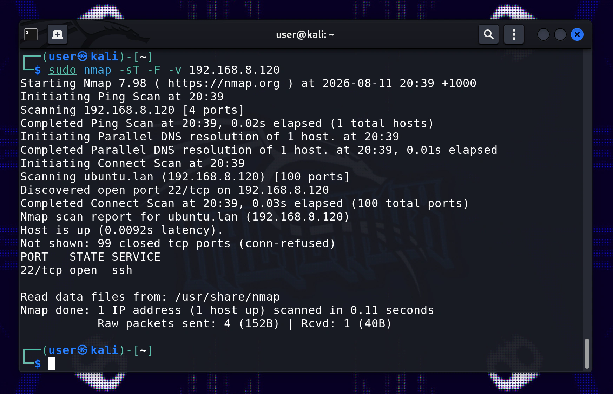

Recapping the last entry
In the previous entry in this series on Wireshark packet capture and analysis, I went over some of the fundamentals of using Wireshark including: the pre- and post-capture screens; filtering packets before and after the capture; and the packet list, packet details, and packet bytes panels. All of this was done in the context of a unicast Kali VM host to Ubuntu VM host setup on my homelab network — capturing a series of simple ICMP ping requests and responses.
What we're doing in this entry
In this log entry, I'll be using the exact same Kali VM host to Ubuntu VM host network setup, but this time with a more interesting type of network traffic to capture, an Nmap scan capture.
The plan here is to use the Kali VM to do an Nmap port scan of the Ubuntu VM, and to capture and analyse the types of packets that get captured during this scan.
When using Nmap, there are several different modes and types of scans that can be done and captured, including host discovery scans, and OS detection. For this entry I'll be doing 2 types of scans: a TCP connect scan, and a SYN stealth scan, both of which are port scans, often used for reconnaissance or defensive hardening.
As a little addition, I'll also do a scan using the basic Python port scanner I made in one of my other projects on here. I'm curious to see what differences if any this might have to Nmaps TCP connect scan.
VM network and addresses
As mentioned I'll be using the same network topology setup, shown below.

And here are the Ubuntu and Kali VM IP and Mac addresses, exact same as last entry.
ubuntu vm --------- IP: 192.168.8.120 MAC: 22:CE:B9:74:45:24 kali vm ------- IP: 192.168.8.209 MAC: 4E:21:01:F3:C3:47
Why do this?
The purpose of capturing an Nmap scan is to gain an appreciation for what a scan looks like at the protocol level. Becoming familiar with this will help with identifying attack patterns when using Wireshark in the future. Capturing this type of network traffic, is also a good excuse to go over some of the fundamentals of the TCP/IP connection mechanics, including the famous 3-way handshake, and looking at how the SYN stealth scan transgresses against this handshake.
Generating scan traffic with Nmap
